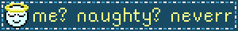
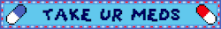
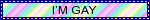
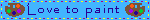
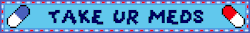
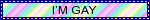
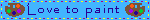
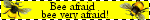
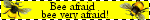

A Quaint Laboratorium
Renowned About Page
Hello, it's Artur and I go by they/he. Studying Computer Science in Germany, I tend to ramble a lot and get lost in thoughts. Friends would sometimes describe me as overly positive or encouraging because they grow sick of me being a desperate cheerleader! That's why I stranded here, basically. Inspired by the notions of the Yesterweb and my very own Internet Nostalgia, I found myself loving the idea of a small space in eternity that would only be mine.
Social media has been a big part of my life. I enjoyed it for a bit, yet I can't help but notice the prevalent feeling of anxiety that accompanied me. With times changing and my identity developing, I made the decision to loosen the grip social media would have on my mental health and not cater to an algorithm. I kinda just want to do me, so here I am.
I love digital and traditional drawing to soothe my mind. I enjoy taking photos on film because that's how I enjoy to treasure those moments. I code things because I still need to learn to love myself. I try to combine it all in a grand mess while trying to not fall in the dreaded pit of perfection and extrinsic self-improvement. We're just hitting the brakes for some time.
This site is a small laboratory for my ideas to develop. I want to spend time thinking about what I do and how I execute it. This place is the result of my internet research. How and what is an individual on the internet if you strip away the money? Where would our minds wander if we would use this unique medium to express ourselves? It is so much to think about. And if I get tired and my brain gets sleepy again, I'll just post some art of funny creatures. Hit me up if you want to talk.
Discord: un.artur
Mastodon: @maus@blasius.club (German)
Blinkies



 

 
